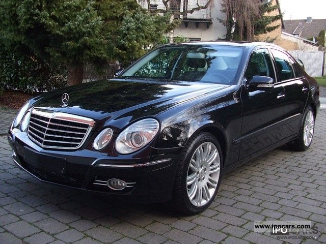

Motoryzacja to moja pasja! Fascynuje mnie zarówno historia motoryzacji, jak i najnowsze technologie, które zmieniają branżę. Uwielbiam starsze modele Mercedesów.
Ulubiony Samochód
Mój ulubiony samochód to Mercedes e500 z 2007 roku. Klasyczny wygląd, mocny silnik i niesamowite brzmienie - to coś, co sprawia, że ten model jest wyjątkowy.
